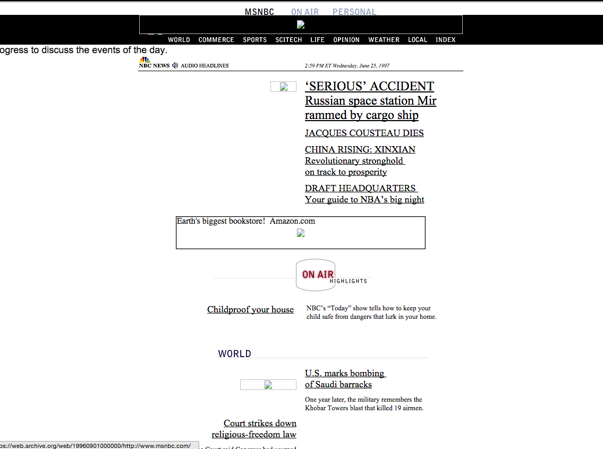

CNET.com was launched in 1994 and is one of the first major online publications that covered computers, tech and the internet. From 1996 to 1999, we see a development in their stylization, with the use of more sophisticated shapes and distinguished areas of the site. The website grew to allow for more affordances and to become more easy to use.
Below, you can see the differences between native online publications, and print publications that began publishing online.

The Los Angeles Times
The New York Times 1996-1999
The San Francisco Chronicle 1996-2000
Salon.com 1997-1999

MSNBC 1997-2000
